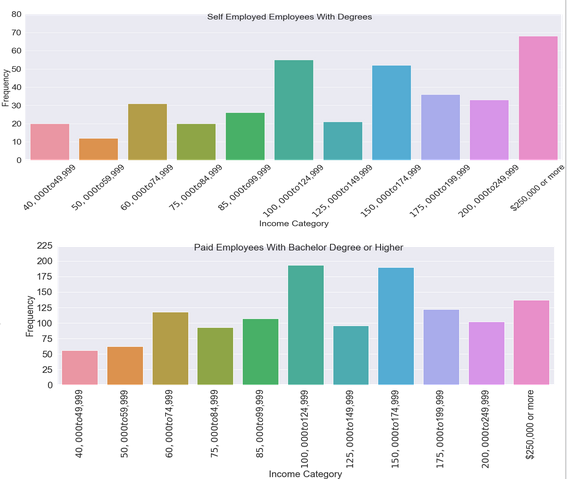

Degree of Value: Value of a Degree
Anchal Vias
Hamilton Chevez
Hao Huang
Diana Ter-Ghazaryan
Guangzhuan Mo

Have you wondered the worth of your education?
Maybe you've asked yourself if what you are majoring in is worth it?
Or if what degrees you have attained have provided you with satisfaction or return on investment?
Follow this presentation as we explore various datasets that help us answer the following questions:
-
How is educational attainment related to income and to career satisfaction in the United States?
-
How is income and career satisfaction stratified by degree and program?
-
What role do University rankings play in satisfaction with education received?
Motivation: Unemployment Rates and Earnings by Educational Attainment
Data Sources Used For Analysis
2017 SHED (Survey of Household Economics and Decision making) -- measures economic well-being of US households and identifies risk to their finances. Includes modules on credit access, economic fragility, and student loads, etc.
Univeristy rankings datasets and PSEO (US News and World Report, CWUR, Shanghai Rankings, Post-Secondary Employment Outcomes)
FIU graduating Senior exit surveys from 2012 to 2020
Analysis and Tools Used
Data Cleaning and Wrangling
Excel, Pandas, Python
Visualization
Tableau, Matplotlib, Seaborn
Analysis
Clustering (K-means) Multiple Correspondanca Analysis
First the team went through the existing datasets to clean the data and wrangle new features. For the university rankings, the team worked together to manually web scrape the content.
To explore beyond the scope of our original questions we performed preliminary analysis using K-Means clustering and Multiple Correspondance Analysis (for categorical data).
Although we did find clusters to explore, they were not aligned with our interest for this project.

Education Levels in the US (SHED 2017)
The SHED dataset gave the team access to how the respondents listed their education. This was useful for identifying how the data was partition and thus group categories together.
Household Income for Different Education Levels
Furthermore, the team analysed the percentages of household income and how it differents by different education levels. Do note that the household income are ranges as this is the only data SHED provides.
This allowed the team to analyze the distribution and trends for each combination of categories: gender, degree level, household income, etc.
Higher Education Leads to Higher Household Income
Most people with lower deegrees made less than $50,000.
People with higher level degrees earn more.

So Does the degree matter?
Income distribution amongst households is skewed right with individuals that have a BS/BA degree or higher and self-employed.
No self-employment still yields high income levels for households.

What did SHED reveal about gender?
Like other gender inequality studies, the same is reflected in the 2017 SHED dataset.
More males are part of households with larger household incomes.
Except self employed women with no 4 year degree or higher are part of households of the higher income brackets.
Why would people not be satisfied with their careers? To what extent is a degree a cost-effective way to get into a desired career path?
Many personal, social, and economic factors contribute to the career satisfaction/dissatiscation. Our analysis is based on a few of them:
-
Age
-
Education Level
-
Field of Education
-
Return on investment
Unfortunately, it is not possible to depict the career satisfaction level from age graph because sample is not well distributed and most of the people chose not to respond.
Role of Higher Education in Career Satisfaction
Higher education leads to propserous career and financial security.
The graph shows the correlation between different levels of degrees and career satisfaction.
The education level graph shows that higher the level of education, higher is the gap between the level of career satifaction and dissatisfaction. Thus, people with higher degrees are more satisfied with their careers.
Role of Field of education in Career Satisfaction
People from different fields of education have deifferent career satisfaction.
The field of education graph shows that - people who work in the field of business, management, education are more satisfied with their careers and people from life science, health related fields are less satisfied; regardless of how much they earn.
The Main Reasons for Career Dissatisfaction
People's opinion about changing the existing factors that may lead them to career satisfaction.
Factors:
-
Change field
-
Change school
-
Pursue more degrees
-
Pursue less degrees
-
Pursue no degrees
If given a chance to change one thing that will lead people to the career satisfaction, 41% of people chose to pursue more degrees whereas, just 3% chose not to pursue any degree.
Returns on Investment
Pie chart obtained from the cost/benefit survey on 6297 sample population, belonging to different education levels and varied fields.